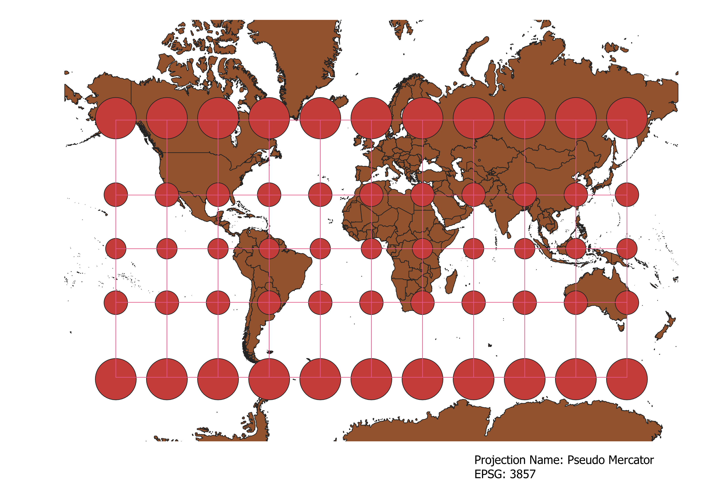
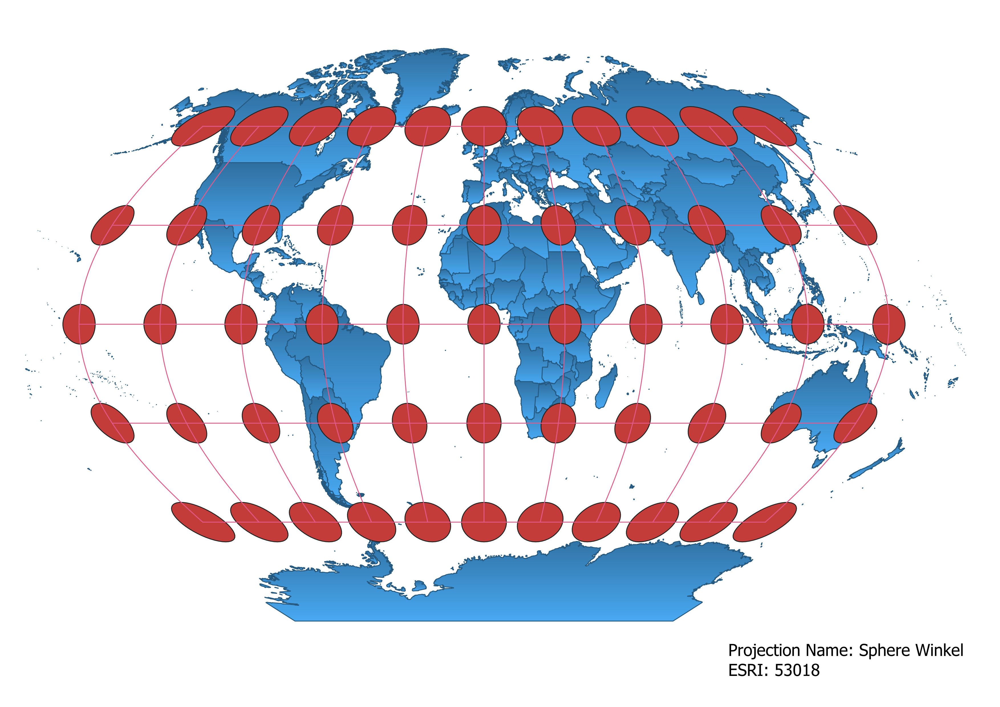
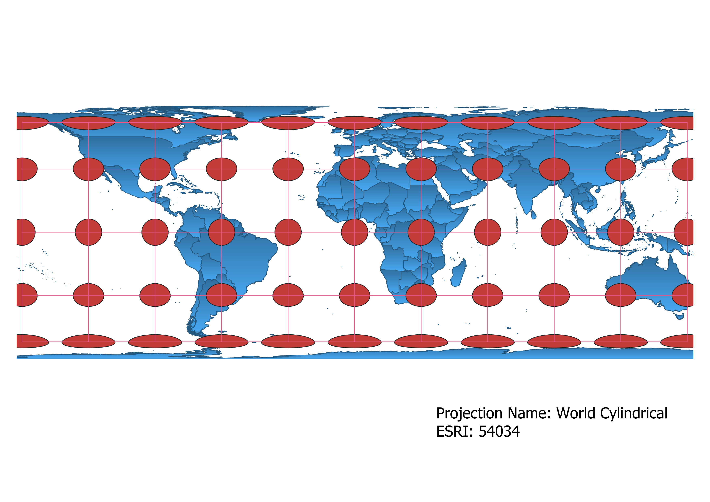
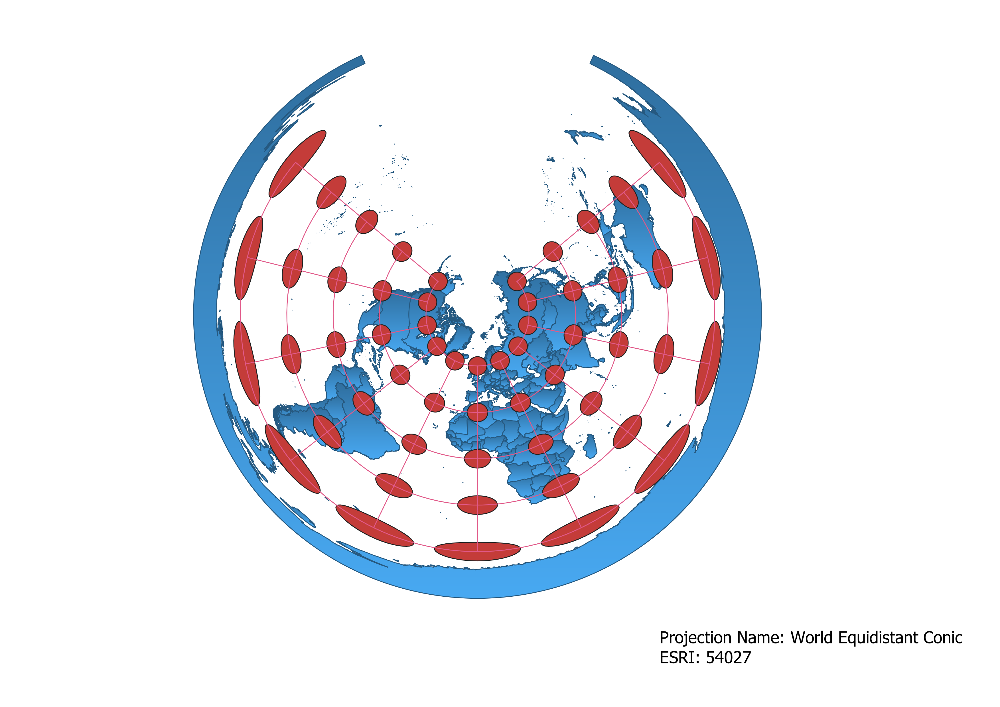
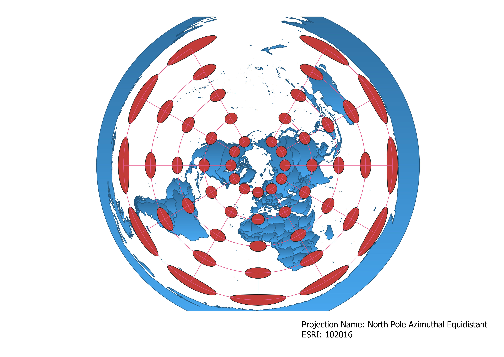
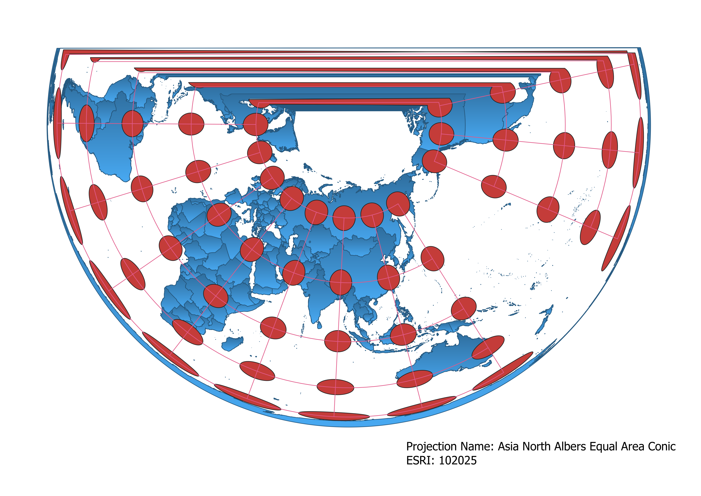
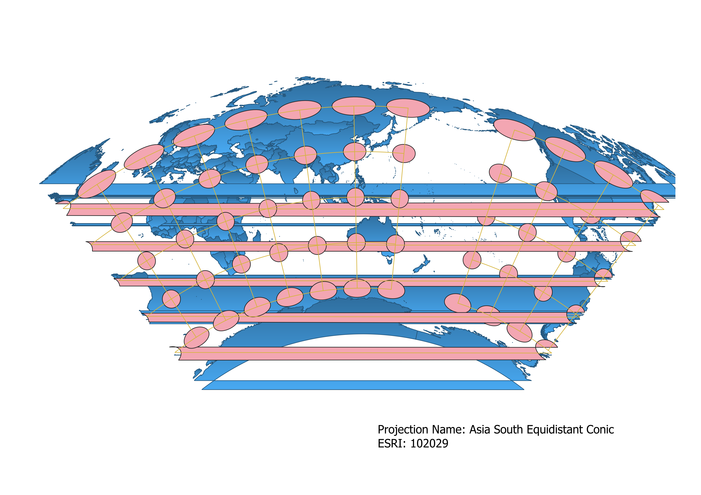

World Projections
Steve Wilmot
In this project I learned how to display images in different projections
Below are 9 different world projections using QGIS to show the data. The different maps have some similar values to each other but are unique to themselves.
WGS84 Projection
As you are approaching the poles the circles are flattening out and becoming wider.

Aitoff Projection
Circular World view with the circles being stretched as they are showing the edge of the map.

Pseudo Mercator Projection
Circles grow in size are you get farther from the equator.

Sphere Winkel Projection
Circle map where the circles get stretched as you go further from the equator./h3>

World Cylindrical Projection
Circles become flat as you reach the poles and move from the equator.

World Equidistant Conic Projection
The circles are stretched as you go towards the outside of the map.

North Pole Azimuthal Equidistant Projection
The circles are stretched as you go towards the outside of the map.

Asia North Albers Equal Area Conic Projection
Semi circle of a map that has the circles around a similar size throughout until the very edge.

Asia South Equidistant Conic Projection
Map has a lot going on but shows the continuity from one side of the map to the other.

Data used for this project
Download Natrual Earth 1:10m Cultural Vector